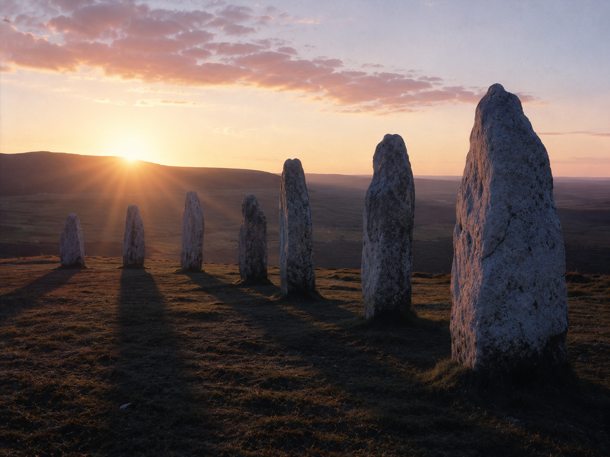

·································· · D E S C E N T · 37 / 40 · ··································

First light over a drowned machine.
The free light. The one the Current could never buy.
It comes anyway, asking nothing.
Put out, it will not go. Each dawn it climbs back, unpaid. Refusing the crown, it stays. Still here when the loud have gone. It does not win. It remains. Slow and certain, it outlasts the dark. To keep on is its only name.